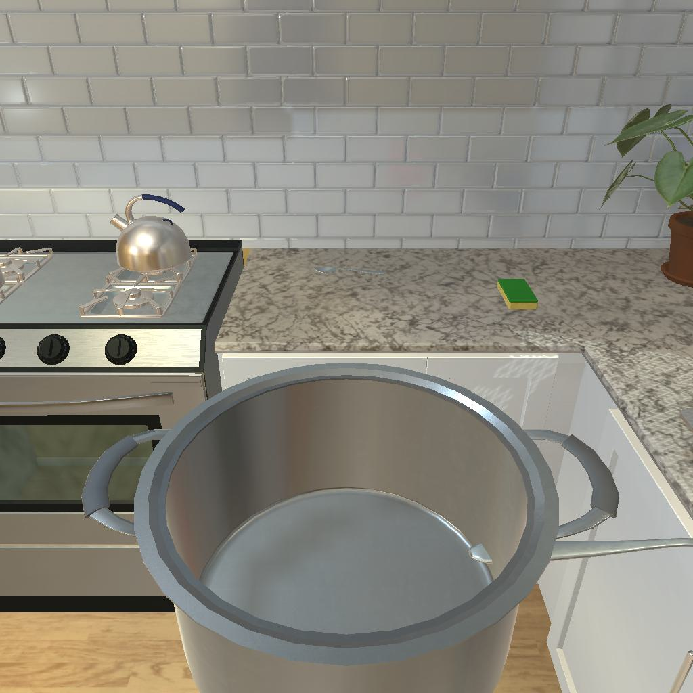

---------------------------------------------------------task: 16---------------------------------------------------------
--------------------------------------------------------------------------------------------------------------------------------------------------------------------
--------------------------------------------------------------------------------------------------------------------------------------------------------------------
Step:--------------------------------------------------------------------------11-------------------------------------------------------------------------------
----------------------------------------
VLM Prompt:
Image1:
Image2:
**Instruction**
1. Analyze the provided images to identify all visible household objects and compare the difference between images (e.h. whether the object is opened or not and taken on hand or not), focusing on those relevant to the task description "put a cool pan in sinkbasin."
2. Use the analysis of images and the task hint "The agent must find an object of the desired type, pick it up, go to a fridge, cool the object with the fridge, then find the correct location to place it, and put it down there. The agent does not need to use the fridge button or open the fridge to cool the object, and the agent just needs to do action that is "cool the object with the fridge"." to answer the question: what is the most reasonable action in the choices for the task description "put a cool pan in sinkbasin"?
3. Decide and write the answer using the template: The answer is: (i): , where i is the real number. If there is no desired object in images, search every place based on **Initial Observation** to find the object. And if no one is exactly correct, choose a similar answer.
**Initial Observation**
You are in the middle of a room. Looking quickly around you, you can see cabinet (1-9), countertop (1-3), drawer (1-9), stoveburner (1-4), microwave (1), sink (1), fridge (1), toaster (1), coffeemachine (1), sinkbasin (1), shelf (1-3), garbagecan (1)
**Answer Choices**
(1): go to cabinet 1
(2): go to countertop 1
(3): go to cabinet 2
(4): go to countertop 2
(5): go to drawer 1
(6): go to drawer 2
(7): go to drawer 3
(8): go to drawer 4
(9): go to drawer 5
(10): go to stoveburner 2
(11): go to stoveburner 3
(12): go to stoveburner 4
(13): go to cabinet 3
(14): go to cabinet 4
(15): go to microwave 1
(16): go to cabinet 5
(17): go to cabinet 6
(18): go to cabinet 7
(19): go to sink 1
(20): go to fridge 1
(21): go to toaster 1
(22): go to coffeemachine 1
(23): go to cabinet 8
(24): go to drawer 6
(25): go to drawer 7
(26): go to drawer 8
(27): go to sinkbasin 1
(28): go to shelf 1
(29): go to shelf 2
(30): go to countertop 3
(31): go to shelf 3
(32): go to drawer 9
(33): go to cabinet 9
(34): go to garbagecan 1
(35): put pot 1 in/on stoveburner 1
(36): examine pot 1
(37): examine stoveburner 1
**Answer**
Let's think step by step by following the instructions.
----------------------------------------
----------------------------------------
Original Response:
Image Analysis:
In Image 1, we see a kitchen counter with a pot on it, a kettle on the stove, and a sponge on the counter. In Image 2, the same pot is now much closer to the viewpoint, indicating it has been picked up or moved.
Task Description Analysis:
The task description states "put a cool pan in sinkbasin." The pot visible in the images could be considered the "pan" mentioned in the task. The hint provides that the agent must find an object, cool it with the fridge without needing to open the fridge or use a button, and then place it in the correct location, which is the sinkbasin.
Answer Choices Analysis:
Since the pot is already visible on the countertop and there's no need to search for it, the actions related to going to different locations (1-34) can be disregarded. The agent does not need to use the stoveburner to cool the object, so options (10-12) and (35) are not relevant. The agent also does not need to examine the pot or the stoveburner, so options (36) and (37) are not necessary.
The most reasonable action based on the images and task description is to put the pot (already picked up or moved closer in image 2) into the sinkbasin to complete the task.
The answer is: (27): go to sinkbasin 1.
----------------------------------------
----------------------------------------
>>> Refine Original VLM Response and Get Pure Action: go to sinkbasin 1
----------------------------------------
-----------------------------------------------------------------
Running time: 11.225023031234741 seconds
Total Money: 7.696040000000004
-----------------------------------------------------------------
-----------------------------------------------------------------
Text Observation:You arrive at loc 27. On the sinkbasin 1, you see a vase 1, a fork 1, a faucet 1, and a knife 1.
-----------------------------------------------------------------
UNSUCCEED